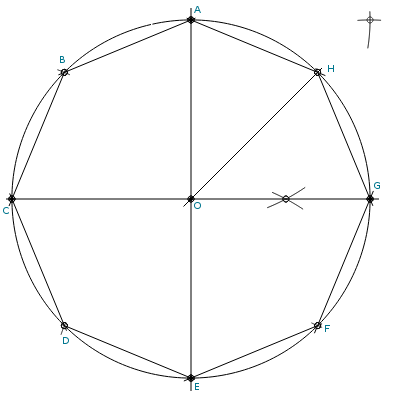

Construction of a Octagon with Compass and Straightedge

Steps:
- Draw circle with radius R centered at point O
- Draw a diamater, intersecting the circle at points A and E
- Create a perpendicular line to AE at point O, intersecting the circle at points C and G.
- Bisect angle AOG to create point H on the circle.
- Centering compass on point A and setting the compass radius to AH, construct point B on the circle.
- Centering compass on point E, construct points D and F.
- The points A-H form the octagon.